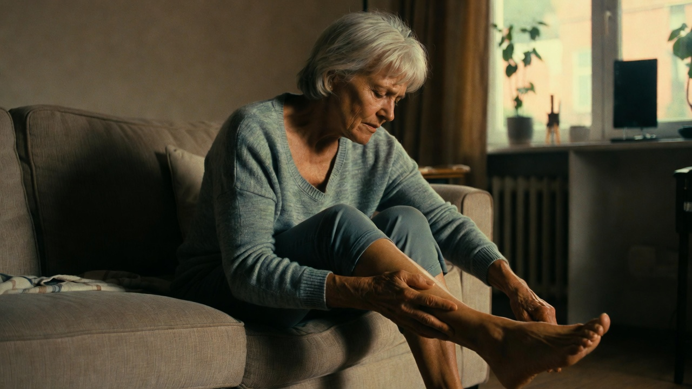

The 20-Minute At-Home Routine Helping People Over 50 With Tired, Heavy Legs Feel Light Again
It isn't simply "getting older." A retired nurse explains the real reason legs feel heavy and swollen by afternoon — and the simple, drug-free routine that gave her her evenings back.

"I'm 63 years old, and I spent four decades as a nurse — on my feet for twelve-hour shifts. By my late fifties, my legs ached so badly by mid-afternoon that I'd stopped joining my husband for our evening walk. I just assumed that was my reward for forty years of standing."
"Every day it was the same. My legs felt fine in the morning, then by about three o'clock they turned heavy — like they were filled with wet sand. My ankles puffed up so my socks left deep red rings. My feet went cold and tingly the moment I sat down at night. I felt a decade older than I was."
If any of this sounds familiar, you are not imagining it — and you are far from alone:
- Legs that feel fine in the morning but heavy and tired by afternoon
- Ankles and feet that swell or puff up over the day
- Cold, tingly feet when you finally sit down at night
- Skipping walks or standing because your legs "aren't up to it"
The real reason — and it isn't just "age"
Here's the part most people are never told. The blood in your legs has to travel uphill to get back to your heart, and it can't do that on its own. It relies on the muscles in your calves squeezing like a pump every time you move.
As we get older — and especially when we sit or stand still for long stretches — those muscles fire far less often. The pump slows down, and blood and fluid settle in the lower legs. That pooling is the heavy, swollen, tired feeling you know so well.
It's not that your legs are "old." It's that the pump that drives them has gone quiet — and the muscles simply need a reason to start working again.
Why the usual advice never worked for me
I tried everything. Compression socks squeeze from the outside, but they don't make the muscles work. Propping my feet up helped for ten minutes, then the heaviness came right back. A friend swore by water pills — they just moved fluid around. And walking does help, but on the days my legs already ached, a walk was the last thing I could face.
Nothing addressed the actual problem: the muscle pump that had gone idle.

Then my daughter showed me the Renvia Circulation Booster
It uses something physiotherapy clinics have relied on for years — EMS, or Electrical Muscle Stimulation. Gentle pulses travel through your feet and lower legs and make the muscles contract and relax on their own, essentially "exercising" that calf pump while you sit perfectly still.
You don't have to do anything. You rest your bare feet on the pad — like simply sitting down — choose a comfort level on the remote (there are 99, so I started whisper-gentle), and let it run for 20 minutes while I have my evening tea. From the very first session I felt a warm, gentle tingle. That's the muscles waking up.
- Helps relieve tired, heavy, aching legs & feet
- Eases the look of swollen ankles after a long day
- Body pads included for knees, lower back & shoulders
- No pills, no prescription — just 20 minutes in your chair
- 99 gentle levels — you're always in control
Spring sale: $100 off the Renvia Circulation Booster
Free shipping and a 90-day money-back guarantee. If your legs don't feel lighter, send it back.
Check Availability →The same idea as the $369 device — for $99
I'd actually seen the famous circulation booster advertised on television for $369. The Renvia uses the same EMS approach, comes with the body pads in the box, and has a longer 90-day guarantee — for less than a third of the price. I kept the difference.
Three weeks later
I won't oversell it — but by the end of the third week of using it daily, my legs genuinely felt like mine again. The afternoon heaviness eased off. And the best part? I'm back on the evening walk with my husband.
If your legs feel heavy too
Heavy, tired legs aren't something you simply have to accept as the years go by. The muscle pump just needs a reason to switch back on — and you can give it one in 20 minutes a day, from your favorite chair. The spring sale is on now, and at $100 off they tend to go quickly.
Get lighter-feeling legs — or your money back
Try Renvia at home for 90 days. Save $100 today with free shipping.
Check Availability →